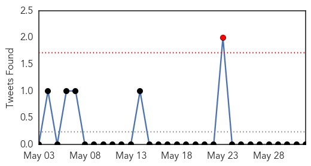

Ebola
30-Day Web Trend
0 alerts, 0 warnings

30-Day Twitter Trend
0 alerts, 0 warnings

Article Locations

Article Confidences

Top Articles:
Top Tweets:
-
No tweets found for Jun 01, 2014
MERS
30-Day Web Trend
3 alerts, 5 warnings

30-Day Twitter Trend
1 alerts, 0 warnings

Article Locations

Article Confidences

Top Articles:
- 0.998
- Saudi Arabia reports highest coronavirus deaths in May
- 0.995
- New MERS death reported in Jordan
- 0.987
- 6 fatalities, 11 infections from MERS-CoV in Jordan
- 0.981
- KUNA : 6 fatalities, 11 infections from MERS-CoV in Jordan
- 0.961
- New MERS Death Reported in Jordan — Naharnet
- 0.951
- Saudi- Shoura to get MERS update from Adel Fakeih
- 0.881
- Shoura to get MERS update from Adel FakeihHealthcare
- 0.867
- KUNA : Saudi Arabia says one man positive for MERS, another two dead
- 0.647
- More Saudi patients recover from MERSHealthcare
Top Tweets:
-
No tweets found for Jun 01, 2014